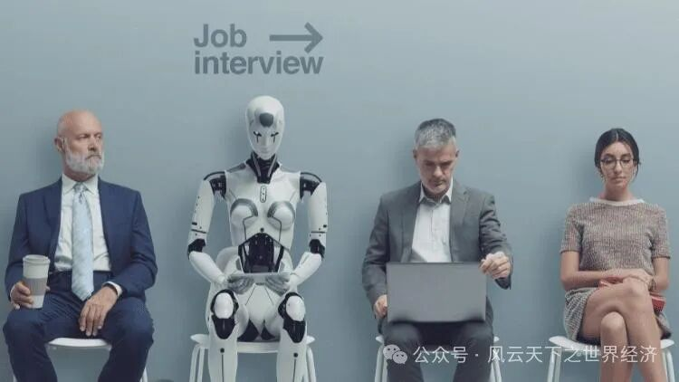
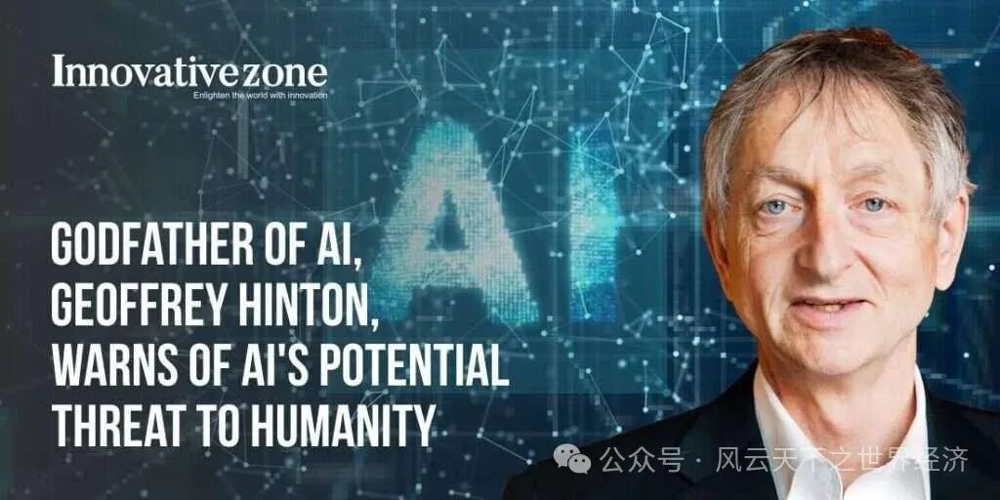

科技泡沫并非是AI带给我们的唯一担心，恰如熊彼得的创新理论所预见的那样，任何技术变革都有具有“破坏性“的一面。如果说人工智能对我们的影响堪比计算机的话，那么它带来的破坏性也将在量级上大为提升，毕竟它更加强大且廉价，他的传播速度远超计算机，在更短的时间里波及各个行业。
生产和创造能力一度是人类的专属，但是现在的人工智能在某些方面却可以做的更好，那么最直接的担心便来自对人类就业机会的威胁上。麦肯锡全球研究院预计，到2030年，多达3.75亿人（占全球劳动力的14%）的工作可能会被自动化取代。Openai 公司的 Tyna Eloundou 及其同事在最近的一篇论文中指出，"大约 80% 的美国劳动力至少有 10% 的工作任务会受到 LLMs 的影响"。另一篇论文还识别了受生成式人工智能影响最大的行业——法律服务、会计和旅行社将面临前所未有的动荡。

人工智能对工作岗位的冲击是对这项技术最大的担心之一
历次技术革新早已证明：科技会取代现有就业机会，但是有一点不要忘记，新技术除了带走一些已有的工作机会，它也会带来一些之前完全不存在的就业机会。当前人类所从事的工作类别中，有40%是1940年以前根本就不存在的。科技无疑是一把双刃剑，它会带了结构化的变化，那些率先搭上AI列车的人会成为新技术的受益者，而那些初级脑力劳动者则会成为牺牲品。尽管存在“正负相抵”或者“正和博弈”的可能，但是社会不是算术题，科技所带来的结构性震荡有可能引发巨大的社会危机。
对于为什么全球科技使用率最高的国家，如日本、新加坡和韩国，失业率却一直是最低的国家之一，几乎没有一个末日论者能给出很好的解释。
除此以外，大型语言模型（LLM）及其相关聊天机器人的出现，它可能直接穿透每个人的隐私。在这个时代，几乎没有人可以离开互联网而生存，它为我们提供极大便利的同时，也在悄无声息地记录并分析我们的喜好、习惯，甚至哪些自己尚不知情的隐私都会在智能算法面前被一一还原。没有人愿意将自己的一切暴漏在公众视野里，但是，由于人工智能的存在，人们最终有可能失去最终的选择权。我们的个人信息是否是模型训练数据的一部分？我们的提示信息是否会被执法部门共享？聊天机器人是否会将我们在线生活中的各种线索连接起来，并输出给任何人？这些潜在的威胁让人们细思恐极。
流行的人工智能应用程序引发的隐私问题日益严重
人工智能对于现有秩序的第三个威胁在于它有可能改变竞争的规则。市场效率往往与充分地竞争紧密相连，这也是世界各国实施反垄断法的经济学依据。但是人工智能技术的应用可能会导致少数企业掌握大量数据资源和算法优势，从而在某些领域形成事实上的垄断地位。高盛集团的希斯-特里（Heath Terry）说，这可能会迫使竞争对手停业。他认为，人工智能 "有能力重新调整竞争格局"。在网络搜索、社交媒体等领域，少数科技巨头凭借海量用户数据和强大的AI算法，已经占据了主导地位。这可能会限制其他创新企业进入市场，并让竞争失去公平性。而在这种垄断地位强大排斥力的作用下，那些“更好”的产品将永远无法出现在公众的消费清单里。例如，广泛使用人工智能的亚马逊控制了美国约 40% 的在线商务，帮助它建立了护城河，使对手更难与之竞争。
如果这种市场竞争的不公平进一步向社会蔓延，它必将带来各种机会的不均等。人工智能在造福一部分群体的情况下，也会伤害另一部分人的利益，反差的结果是社会结构进一步撕裂，贫富将会变得更加悬殊，当它发展到一定程度，社会将会面临倾覆的巨大风险。
颇具讽刺意味的是，对AI报以悲观态度的专家学者并非认为这项技术的潜力不足，而是对其巨大的威力产生了恐惧。 而这种恐惧甚至已经远超就业、生产率等经济领域。在人类命运怀有悲悯之心的人士看来，我们面临的严酷现实是“人是否或早或晚都会成为大模型的工具人？“约翰霍普金斯大学的专家发现，GPT-4可以利用思维链推理和逐步思考，有效证明了其心智理论的存在性，这会赋予它一种可怕的可能性，在无人知晓得情形下对创造它的人类发起攻击。一则未经证实的消息让人不寒而栗：有人利用最新的AutoGPT开发出ChaosGPT，下达了毁灭人类的指令，AI自动搜索核武器资料，并招募其他AI辅助。
在全球科技商业领域，埃隆·马斯克向来以大胆乐观、放纵不羁而著称，但是2023年3月29日，他联名千名科技精英，呼吁暂停开发AI。在这封联名信里，他们传递出这样的焦虑：
“我们是否应该将所有工作，包括有成就感的工作自动化？我们是否应该开发非人类的大脑，使其最终数量超过我们、比我们更聪明...并取代我们？我们是否应该冒着失去对文明控制的风险？”
在人类还没有对以上问题有着清晰的预判的情况下，他们建议后退一步。无独有偶，就在这封联名信发出一个月之后，图灵奖得主、被誉为“人工智能教父”的杰弗里·辛顿（Geoffrey Hinton）辞去了他在谷歌的职位，此举的目的是可以“更自由地谈论人工智能的风险”。他对自己毕生为之奋斗的事业感到后悔，“我用一个正常的理由安慰自己：如果我没做，也有会其他人这么做”。他担心人工智能会被 “坏人 ”恶意利用，比如传播错误信息和煽动暴力。另外，辛顿还对人工智能清除工作岗位和创造一个真假难辨的世界的潜力提出了警告。但是就在此前一个月GTP-4刚刚发布时，他还对这项划时代的技术创新赞誉有加：“毛毛虫吸取了足够的养分，就能化茧成蝶，GPT-4就是人类的蝴蝶”。如此的态度反转让人不禁想起了二战后的爱因斯坦和奥本海默，他们都表达出对参与核武器研发和制造的后悔之意，更为核武器成为冷战筹码和政治威胁工具感到强烈的愤慨。

人工智能教父杰弗里·辛顿警告人工智能对人类的潜在威胁
如今，人工智能技术正在为人类带来了非凡的机遇，同时也暗藏着巨大的风险，当兴奋与恐惧交织在一起的时候，未来之路将会变得更加模糊难辨。
罗马神话里，雅努斯是掌管开始和结束的神，它有两个面孔，一面朝向过去，一面朝向未来，人工智能的崛起无疑也具有这样的双重意味，它一方面预示着革命性的商业形态，而另一方面则暗指那些破坏性的，甚至万劫不复的悲情结局。
带着这样的迷思，人类将共同穿越这道雅努斯之门。